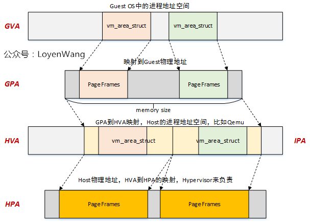
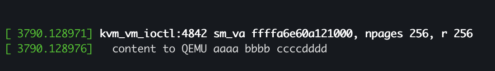
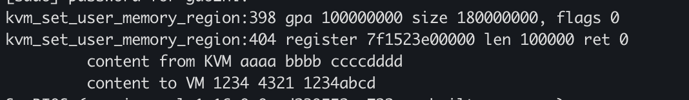
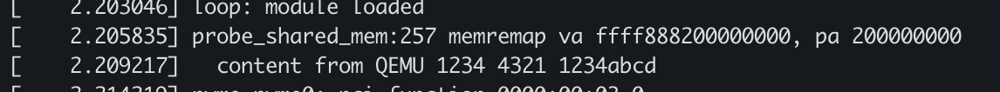

创建Host kernel与Guest的共享内存
介绍
这篇文章会介绍如何在QEMU/KVM 虚拟化中为Guest kernel和Host kernel创建一块shared memory。有了共享内存之后可以做很多用意思的事情，比如共享调度信息，共享IO队列等等。
首先简要介绍下QEMU/KVM的内存虚拟化： 在硬件虚拟化中，Guest运行时实际上有两层页表，第一层是将Guest内部的va(gva)翻译成pa(gpa)，第二层是将Guest的pa(gpa)翻译成Host的pa(hpa）。

看了上面这个图，我们可能会认为内存虚拟化已经很完备了，但其实我们还需要有另一个地址： hva。这是因为
- Host 不会给 Guest的gpa直接分配hpa，而是为每一个gpa 所在的memory slot分配对应的hva。 在发生stage2 page fault的时候再根据gpa对应的hva属性进行hpa的分配
- 有了hva, Host(QEMU)可以走自己的页表访问Guest的内存
- Host(QEMU)能够通过hva和gpa之间的关系管理Guest内存信息
这里贴出一张LoyenWang制作的图来表示这四种地址的关系：

因此QEMU/KVM中现有的机制允许Host中的QEMU访问Guest的物理内存，也就是说QEMU和Guest是天然共享着内存的。这篇文章将会介绍如何进一步让KVM(也就是Host kernel)和Guest之间共享一块内存，实现这样一套机制很有意义，因为Host中大部分有价值的信息以及代码都是在kernel中的，Host kernel能够利用这块共享内存帮助虚拟机提供更多信息或者做更多的事情。
我们将让Guest物理内存的8G<->8G + 1M这1M的内存共享给Host kernel。这需要我们更改QEMU, Host kernel, Guest kernel的代码。代码可以在Github上看到。
下面依次介绍QEMU, Host kernel, Guest kernel的修改：
QEMU
QEMU会针对每一个memory slot调用kvm_set_user_memory_region，这个函数将调用KVM的ioctl(KVM_SET_USER_MEMORY_REGION)完成每个slot gpa到hva的转化。其具体过程可以看LoyenWang的文章。在QEMU的kvm_set_user_memory_region这个函数中，我们加入以下代码，当遇到涵盖我们共享内存区间的memory slot时，我们对KVM调用一个我们新添加的ioctl(KVM_REG_SHARED_MEM)，完成后我们能够对这块地址进行检查，看是否KVM在上面写了预期的数据，并更改这些数据，以让虚拟机启动之后进行检查。
/* SHM layout:
* 8G <-> 8G + 1M
*/
static __u64 SHM_BASE = 8UL << 30;
static __u64 SHM_SIZE = 1UL << 20;
static bool has_shm = false;
static int kvm_set_user_memory_region(KVMMemoryListener *kml, KVMSlot *slot, bool new)
{
---
if (mem.guest_phys_addr <= SHM_BASE &&
SHM_BASE + SHM_SIZE <= (mem.guest_phys_addr + mem.memory_size) && !has_shm) {
struct kvm_shm_parm parm;
void *shm = (void *)mem.userspace_addr +
SHM_BASE - mem.guest_phys_addr;
printf("%s:%d gpa %llx size %llx, flags %x\n",
__func__, __LINE__,
mem.guest_phys_addr, mem.memory_size, mem.flags);
parm.uva_start = (uint64_t)shm;
parm.uva_size = SHM_SIZE;
ret = kvm_vm_ioctl(s, KVM_REG_SHARED_MEM, &parm);
printf("%s:%d register %llx len %llx ret %d\n", __func__, __LINE__,
(__u64)shm, SHM_SIZE, ret);
printf("\t content from KVM %x %x %x\n", *(int *)shm, *(int *)(shm + (1UL << 10)),
*(int *)(shm + (1UL << 11)));
*(int *)shm = 0x1234;
*(int *)(shm + (1UL << 10)) = 0x4321;
*(int *)(shm + (1UL << 11)) = 0x1234abcd;
printf("\t content to VM %x %x %x\n",
*(int *)shm, *(int *)(shm + (1UL << 10)),
*(int *)(shm + (1UL << 11)));
has_shm = true;
}
---
Host/KVM
在KVM新添加的ioctl中我们在参数中拿到hva的地址和共享内存的大小后，调用get_user_page将这段内存pin在内存中（防止迁移与swap），并且此时KVM能够通过page结构体直接访问这块内存的页，为了更加简单的读写共享内存，我们使用vm_map_ram将pages结构体转化成连续的内核虚拟地址，此时Host(KVM)就能够通过这个地址直接访问共享内存。
正如上面提到的，为了让QEMU验证是否KVM读写成功了这块共享内存，KVM会向共享内存中写入数据。
case KVM_REG_SHARED_MEM: {
struct kvm_shm_parm parm;
struct page **pages;
unsigned long npages;
unsigned long shm_start, shm_size;
int r, nid = 0;
r = -EFAULT;
if (copy_from_user(&parm, argp, sizeof(parm)))
goto out;
shm_start = parm.uva_start;
shm_size = parm.uva_size;
npages = 1 + ((shm_size - 1) / PAGE_SIZE);
pages = vmalloc(npages * sizeof(*pages));
/**
* Pin and access user pages
*/
down_read(¤t->mm->mmap_lock);
r = get_user_pages(shm_start, npages, FOLL_WRITE, pages, NULL);
up_read(¤t->mm->mmap_lock);
if (r != npages) {
vfree(pages);
goto out;
}
/**
* Map pages into continuous address
*/
nid = page_to_nid(pages[0]);
kvm->kvm_shm = vm_map_ram(pages, npages, nid);
if (!kvm->kvm_shm) {
vfree(pages);
goto out;
}
printk("%s:%d sm_va %px, npages %lu, r %d\n",
__func__, __LINE__, kvm->kvm_shm, npages, r);
*(int *)(kvm->kvm_shm) = 0xaaaa;
*(int *)((kvm->kvm_shm) + (1UL << 10)) = 0xbbbb;
*(int *)((kvm->kvm_shm) + (1UL << 11)) = 0xccccdddd;
pr_info("\t content to QEMU %x %x %x\n",
*(int *)(kvm->kvm_shm), *(int *)((kvm->kvm_shm) + (1UL << 10)),
*(int *)((kvm->kvm_shm) + (1UL << 11)));
break;
}
Guest kernel
Guest kernel是最后看到这块共享内存的，它可以查看自己物理地址8G到8G+1M这个区间中是否有来自QEMU写好的数据。Guest kernel会将这个共享内存对应的内核va记录下来，之后可以使用这个va来读写共享内存。
/*
* SHM layout:
* 8G <-> 8G + 1M
*/
static u64 SHM_PA = 8UL << 30;
static u64 SHM_SZ = 1UL << 20;
static void* shm_va;
static int probe_shared_mem(void)
{
shm_va = memremap(SHM_PA, SHM_SZ, MEMREMAP_WB);
if (IS_ERR(shm_va)) {
pr_err("%s:%d failed to memremap shared mem\n",
__func__, __LINE__);
return PTR_ERR(shm_va);
}
printk("%s:%d memremap va %px, pa %llx\n",
__func__, __LINE__, shm_va, SHM_PA);
printk("\t content from QEMU %x %x %x\n",
*(int *)shm_va, *(int *)(shm_va + (1UL << 10)),
*(int *)(shm_va + (1UL << 11)));
memset(shm_va, 0, SHM_SZ);
return 0;
}
共享内存验证
在启动过程中，可以在Host的dmesg和Guest的启动log中检查共享内存是否建立成功:   
参考
https://github.com/iaGuoZhi/Virtualization/tree/master/host-guest-shm